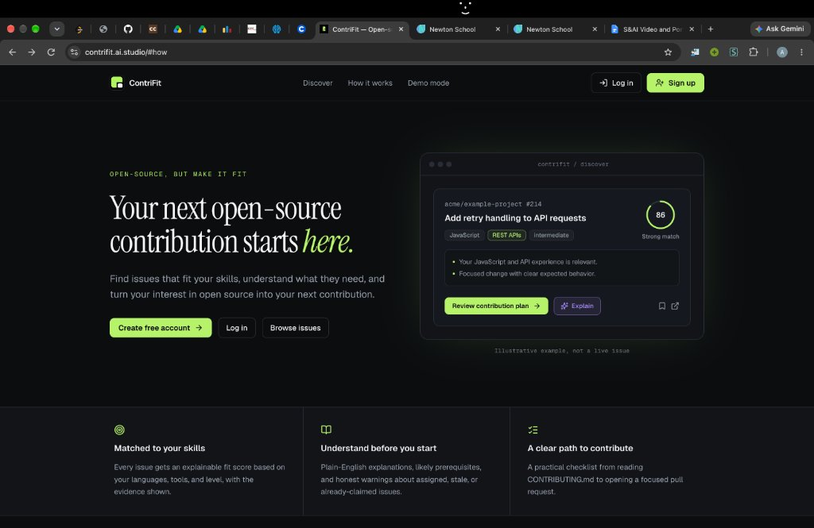
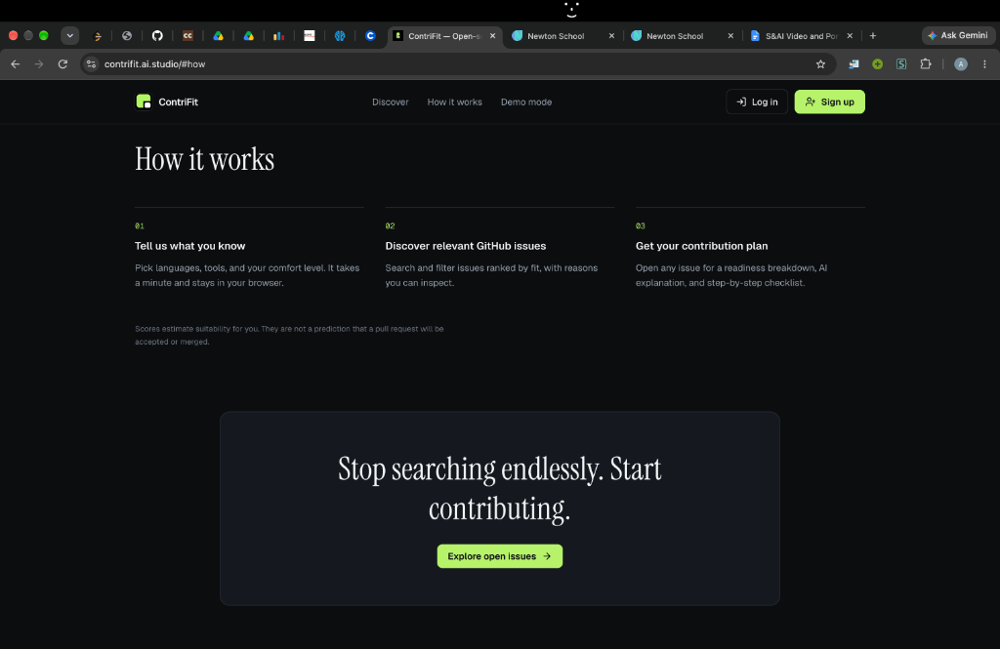
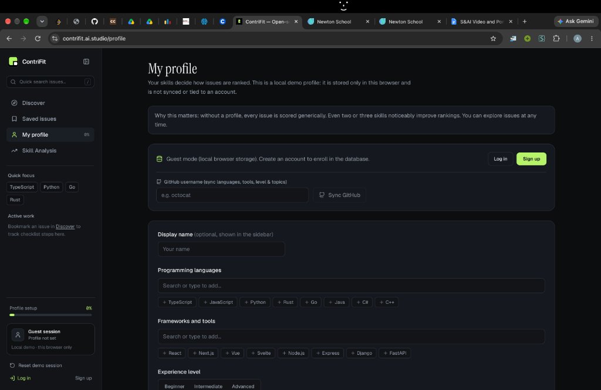
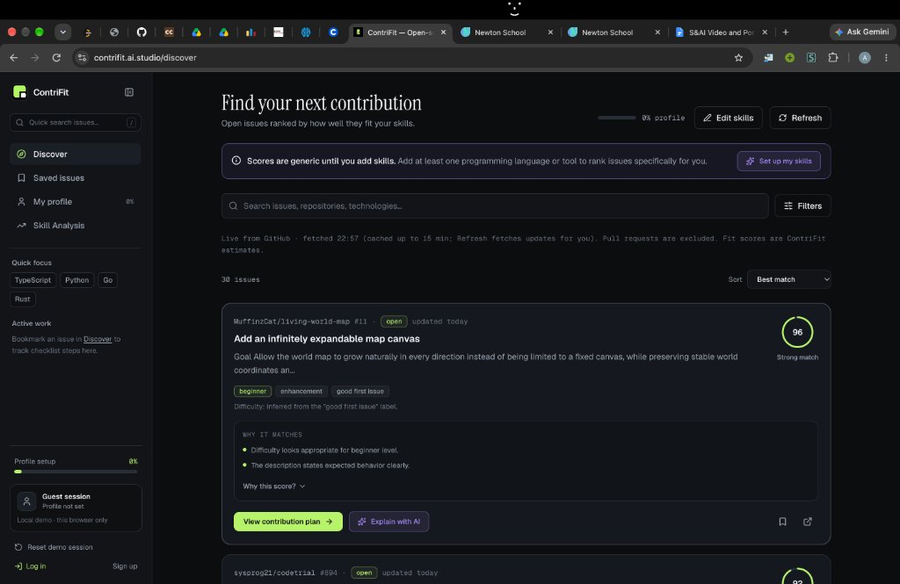

Open-Source, But Make It Fit. AI-Assisted Contribution Discovery Platform
Contributing to open source is an invaluable rite of passage for software engineers. However, newcomers face persistent hurdles:
good first issue often have undocumented prerequisites or hidden complexities.ContriFit bridges the gap between “I want to contribute” and “I know which issue to investigate next” through personalized skill matching, transparent readiness scoring, and AI-assisted contribution checklists.

| Pillar | Description | Implementation Mechanism |
|---|---|---|
| 1. Matched to Your Skills | Tailored issue discovery based on languages, frameworks, and developer experience. | Deterministic fit scoring (0–100) comparing user skill vectors against GitHub issue tags and descriptions. |
| 2. Understand Before You Start | Honest signals about issue readiness, prerequisites, and freshness. | Metadata extraction for activity, maintainer engagement, assignment status, and skill-gap warnings. |
| 3. Clear Path to Contribute | Step-by-step checklist guiding the contributor from setup to PR submission. | Gemma 4 AI integration providing natural language context and practical next steps. |

To eliminate friction for first-time visitors, ContriFit implements a browser-local Guest Session mode that persists developer competencies in local storage without requiring account registration.

The discovery engine connects directly to the GitHub REST API to retrieve open, actionable issues in real time. Each recommendation features:
96% Strong Match) highlighting matched languages, difficulty levels, and clear scope.
| Layer | Technologies | Purpose & Function |
|---|---|---|
| Frontend Framework | React 19, React Router v8, Vite 8 | Modern SPA architecture with high-speed compilation and client-side routing. |
| Language & Types | TypeScript 5.7 | Strict type safety across GitHub API payloads, user profiles, and score calculations. |
| UI & Styling | Tailwind CSS v4, Lucide React | Responsive dark-themed layout matching the Figma design system. |
| Backend / API Proxy | Supabase Edge Functions (Deno / TS) | Secure API key isolation, GitHub request proxying, and caching. |
| Data Provider | GitHub REST API | Live issue fetching, repository metadata, labels, and activity timestamps. |
| AI Reasoning | Gemma 4 Provider | Contextual explanations and step-by-step contribution checklists. |
• Team Leadership: Spearheaded the team through the entire Hacktoberfest hackathon at ADYPU Pune, coordinating milestones and deliverables to achieve 7th place among 300 competing teams.
• Creative & UI Direction: Architected the product design, visual hierarchy, and component layouts based on modern developer ergonomics.
• Frontend Implementation: Built the profile setup interface, responsive issue feed cards, and fit-score meters in React and Tailwind CSS.
• Technical Documentation & Presentation: Authored the product specifications, architecture documentation, and presentation slide deck.